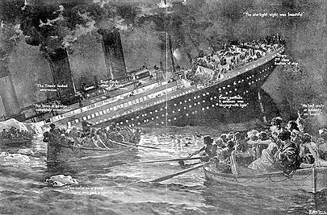
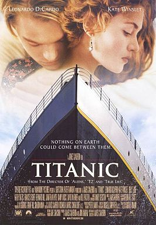

鐵達尼號
介紹
「鐵達尼號」是一艘英國皇家郵輪，也是白星航運公司旗下的3艘奧林匹克級郵輪之一，在其服役時間是全世界最大的海上船舶，由貝爾法斯特哈蘭德與沃爾夫造船廠建造，號稱「永不沉沒」、「夢幻之船」。頭等艙在設計上追求舒適和奢華的最高水準，設有健身房、游泳池、接待室、高檔餐廳和豪華客艙。
事件
1912年4月14日深夜至15日凌晨在北大西洋發生的著名船難，事發時是首航的第5天，該船當時是世界最大的郵輪。
1912年4月14日星期天23時40分與一座冰山擦撞前，已經收到6次海冰警告，但當瞭望員看到冰山時，該船的行駛速度正接近最高速。由於無法快速轉向，該船右舷側面遭受了一次撞擊，右舷上的鉚釘折斷導致部分船體出現縫隙，使16個水密隔艙中的5個進水。鐵達尼號的設計僅能夠承受4個水密隔艙進水，因此沉沒。
當乘客被放入救生艇時，他們使用訊號彈和無線電報向外求援。根據當時航運業的慣例，鐵達尼號的救生艇系統只是將乘客「運送」到附近的其他船隻，而不是設計給所有人員「同時撤離」到救生艇上避難，因此在數量上遠遠不足；隨著鐵達尼號迅速沉沒，而其他船隻還有幾個小時才能抵達，許多乘客和船員無法搭乘救生艇，更糟糕的疏散管理導致許多救生艇在還沒完全裝滿乘客之前就下水。2小時40分鐘後，船隻沉沒。
當鐵達尼號沉沒時，超過1500名乘客和船員仍在船上。數分鐘後，幾乎所有跳入海中或跌入海中的人都因冷休克而死亡。客輪喀爾巴阡號在沉船約1個半小時後抵達現場，並在事故發生後9個半小時（即4月15日9時15分前）救到最後一名生還者，這艘船總共救助了710人。這次災難造成1,514人死亡，成為歷史上最嚴重的和平時期船難，震驚了全世界。
此事故暴露出撤離期間救生艇數量嚴重不足、管理不善和三等艙乘客的不平等待遇等問題，引起了廣泛爭議。
之後還被拍攝成電影《TITANIC》，由詹姆斯·卡麥隆導演監製拍攝，於1997年上映，最初的全球總票房超過18.4億美元，是全世界第一部達到10億美元大關的電影。
 
事故經過
1912年4月14日
- 冰山警告（9時整－23時29分）
- 鐵達尼號駛入冰川巷（23時30分－23時39分）
- 碰撞（23時40分）
- 碰撞的影響（23時40分－0時04分）
1912年4月15日
- 準備棄船（0時05分－0時40分）
- 救生艇下水（0時45分－1時29分）
- 最後一艘救生艇下水（1時30分－2時05分）
- 沉沒前（2時15分－2時20分）
- 海面上漂浮的乘客與船員（2時20分－4時10分）
- 救援船抵達和離開現場（4時10分－9時15分）
關鍵人物
- 愛德華·約翰·史密斯（船長）
- 傑克·菲利浦（高級電報員）
- 范德瑞克·弗萊特（瞭望員）
- 威廉·默多克（一副）
- 查爾斯·萊托勒（二副）
- 湯瑪斯·安德魯斯（總設計師）
- 布魯斯·伊斯梅（白星航運董事長）